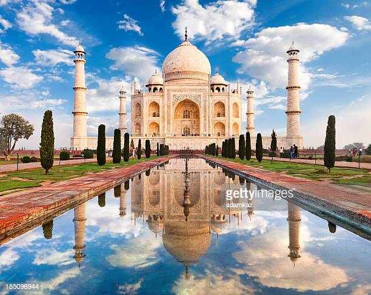

TAJMAHAL
The Taj Mahal (/ˌtɑːdʒ məˈhɑːl, ˌtɑːʒ-/; lit. 'Crown of the Palace'),[4][5][6] is an Islamic ivory-white marble mausoleum on the right bank of the river Yamuna in the Indian city of Agra. It was commissioned in 1631 by the Mughal emperor Shah Jahan (r. 1628–1658) to house the tomb of his favourite wife, Mumtaz Mahal; it also houses the tomb of Shah Jahan himself. The tomb is the centrepiece of a 17-hectare (42-acre) complex, which includes a mosque and a guest house, and is set in formal gardens bounded on three sides by a crenellated wall. Construction of the mausoleum was essentially completed in 1643, but work continued on other phases of the project for another 10 years. The Taj Mahal complex is believed to have been completed in its entirety in 1653 at a cost estimated at the time to be around ₹32 million, which in 2020 would be approximately ₹70 billion (about US $1 billion). The construction project employed some 20,000 artisans under the guidance of a board of architects led by the court architect to the emperor, Ustad Ahmad Lahauri. Various types of symbolism have been employed in the Taj to reflect natural beauty and divinity. The Taj Mahal was designated as a UNESCO World Heritage Site in 1983 for being "the jewel of Muslim art in India and one of the universally admired masterpieces of the world's heritage". It is regarded by many as the best example of Mughal architecture and a symbol of India's rich history. The Taj Mahal attracts more than 6 million visitors a year[3] and in 2007, it was declared a winner of the New 7 Wonders of the World (2000–2007) initiative.
GATEWAY OF INDIA

The Gateway of India is an arch-monument built in the early 20th century in the city of Bombay (now Mumbai), India. It was erected to commemorate the landing of King-Emperor George V, the first British monarch to visit India, in December 1911 at Strand Road near Wellington Fountain. The foundation stone was laid in March 1913 for a monument built in the Indo-Islamic style, inspiring by elements of 16th-century Gujarati architecture. The final design of the monument by architect George Wittet was sanctioned only in 1914, and construction was completed in 1924. The structure is a memorial arch made of basalt, which is 26 metres (85 feet) high, with an architectural resemblance to a triumphial arch as well as Gujarati architecture of the time. After its construction the Gateway was used as a symbolic ceremonial entrance to India for important colonial personnel. The Gateway is also the monument from where the last British troops left India in 1948, following Indian independence. It is located on the waterfront at an angle, opposite the Taj Mahal Palace and Tower Hotel and overlooks the Arabian Sea. Today, the monument is synonymous with the city of Mumbai, and is amongst its prime tourist attractions. The gateway is also a gathering spot for locals, street vendors, and photographers soliciting services. It holds significance for the local Jewish community as it has been the spot for Hanukkah celebrations, with the lighting of the menorah, since 2003. There are five jetties located at the Gateway, of which two are used for commercial ferry operations.
GOA

Goa (/ˈɡoʊə/ (listen)) is a state on the southwestern coast of India within the Konkan region, geographically separated from the Deccan highlands by the Western Ghats.[8][9] It is located between the Indian states of Maharashtra to the north and Karnataka to the east and south, with the Arabian Sea forming its western coast. It is India's smallest state by area and its fourth-smallest by population. Goa has the highest GDP per capita among all Indian states,[3][10] two and a half times as high as the GDP per capita of the country as a whole.[11] The Eleventh Finance Commission of India named Goa the best-placed state because of its infrastructure, and India's National Commission on Population rated it as having the best quality of life in India (based on the commission's “12 Indicators”).[11] It is the third-highest ranking among Indian states in the human development index.[4] Panaji is the state's capital, while Vasco da Gama is its largest city. The historic city of Margão in Goa still exhibits the cultural influence of the Portuguese, who first voyaged to the subcontinent in the early 16th century as merchants, and conquered it soon thereafter, whereupon Goa became an overseas territory of the Portuguese Empire, part of what was then known as Portuguese India, and remained as such for about 450 years until it was annexed by India in 1961.[12][13] Goa's official language, which is spoken by a majority of its inhabitants, is Konkani. Goa is visited by large numbers of international and domestic tourists each year because of its white-sand beaches, active nightlife, places of worship, and World Heritage-listed architecture. It also has rich flora and fauna because it lies very close to the North Western Ghats rainforests, one of the rare biodiversity hotspots of the world.